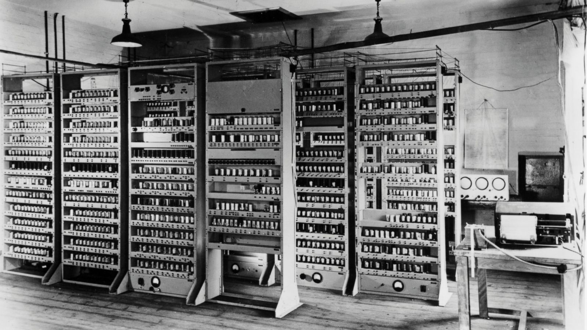

Evolution of Technology

The first computer was the ENIAC machine
Which was invented in 1946
And weighed 30 tons
26 Years Later
The first Console is invented
Costing $99.95
This console was called the Magnavox Odyssey
9 Years Later
The first Laptop is invented
Costing $2,995 a
and weighing 24 pounds
This laptop was called the Osborne I
49 Years Later
Laptops have evolved
Costing around $1000
And Weighing between 2 to 8 pounds
The Same Year
Computers are more customizable
And weighs around 20 pounds
The cost varies from $300 to $4000